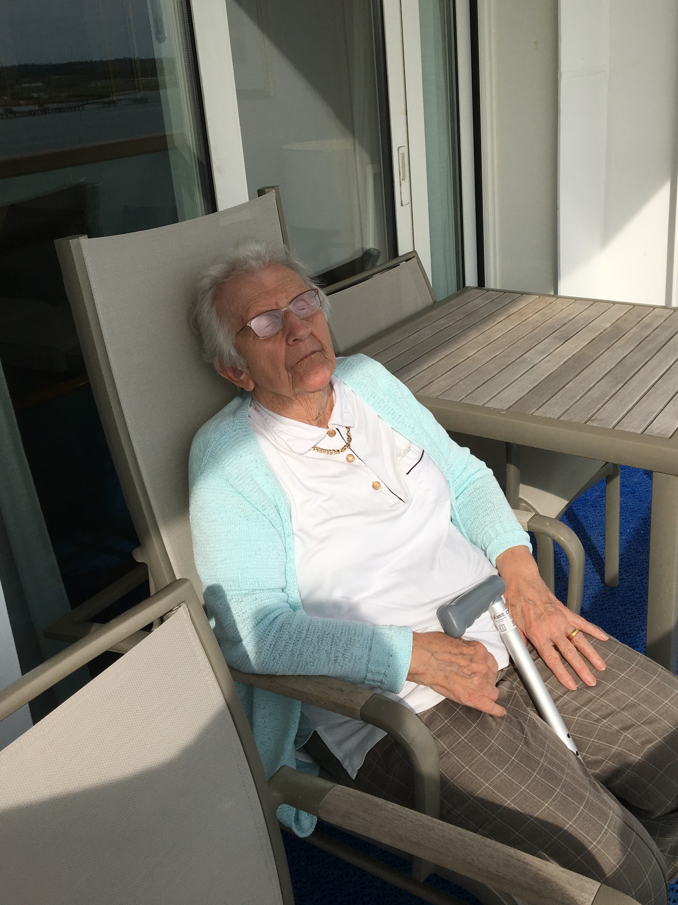

Norway Cruise 2017
Saturday June 3rd 2017

After leaving the confines of Southampton Waters, Aurora altered her course to the east to begin
transiting the south coast of England. In the early morning the ship was making her way through the Dover Traffic Separation
scheme which runs between the coats of the UK and France, and controls the movement of large amounts of shipping traffic,
including ferries, in the area.
By midday Aurora was passing through the gas fields following a track between the many gas and oil drilling platforms along a
deep water route. Once through the routeing scheme in the late afternoon, Aurora exited into the North Sea and altered her
course northwards towards Norwegian waters passing Dogger Bank to port. Dogger Bank is an extensive shoal about 60 miles to the
east of Northumberland.
During the last ice age the bank was part of a large landmass connecting Europe and the British Isles.
It is a famous fishing ground and has been the site of three military actions of particular significance. In 1904, as the
Russian Baltic Fleet made its way to the Far East, it opened fire on Britush trawlers fishing on Dogger Bank, believing them to
be Japanese Torpedo boats.
We had our breakfast in the buffet restaurant, The Horizon. Cereal, fruit, croissant and yoghurt for Mum. Full cooked breakfast, toast,
croissant and yoghurt for me, washed down with lots of hot coffee. The weather during the day was sunny, but bracing if sat on the
balcony, if you were Mum anyway. We were so full from the breakfast, we didn't fancy lunch. We decided instead to have afternoon tea.
From 3.30pm they were serving sanwiches, rolls,and scones with jam and cream. You did have to assemble the later yourselves. The evening
dress code was Black Tie. This was described as "Dinner jacket, tuxedo or dark suit for gentlemen. Ball gown, trouser suit or cocktail
dress for ladies. Medals may be worn." I have never owned a ball gown or cocktail dress and never will. Posh b;ouse and black trousers
was as Black Tie as I got.
Our choice of post dinner entertainment was Maurice Grumbleweed in the Curzon Theatre, or the Black Tie Ball with dance instructors
Ron and Pat, and the Aurora Trio in Carmen's. We decided to retire to our suite with a bottle of Sauvignon Blanc. By now it had got
foggy, and we spent the rest of the night, sounding our fog siren.
{kind=link}